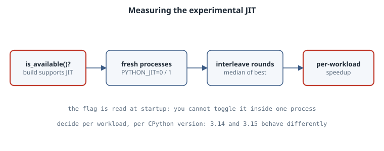

The Experimental JIT: Measure Before You Flip PYTHON_JIT=1
The Experimental JIT: Measure Before You Flip PYTHON_JIT=1
Thesis
CPython has shipped an experimental just-in-time compiler since 3.13. Many binary builds include it: the uv-managed CPython builds used here report sys._jit.is_available() == True on both 3.14 and 3.15. But it is off by default, and you turn it on with PYTHON_JIT=1 at interpreter startup. The 3.15 What’s New reports a 7–8% geometric-mean pyperformance gain on x86-64 Linux, with individual benchmarks ranging from “roughly 15% slowdown to over 100% speedup”. That range is the whole lesson. Whether the JIT helps depends on your workload and your CPython version. The only honest way to decide is a small, fair A/B measurement, and this chapter builds one.
Mental model

- Specializing interpreter first. Since 3.11, CPython rewrites hot bytecodes into type-specialized versions. The JIT builds on that: hot code paths are recorded as traces of small “micro-ops”, optimized, and stitched together from precompiled machine-code templates (stencils). That is why LLVM is needed only at build time (Tools/jit/README.md).
- 3.15 changed a lot. The 3.15 notes describe a new tracing frontend that records actual execution paths, basic register allocation, more constant propagation, and support for more bytecodes, including simple object creation and partial support for generators. So a 3.14 result tells you little about 3.15.
- Three introspection hooks live in
sys._jit(a CPython implementation detail):is_available(): the build can JIT.is_enabled(): the JIT is on for this process.is_active(): the topmost frame is executing JIT code; documented as meant for testing the JIT itself.
- The switch is read at startup.
PYTHON_JITis consulted “at interpreter startup”. Settingos.environ["PYTHON_JIT"] = "1"inside a running process does nothing. On this box,is_enabled()still printedFalseafterwards. Every comparison therefore needs separate processes.
Worked example: four workloads, two versions
bench_jit.py contains four deliberately different kernels:
loop_sum: a tight integer loop.fib: recursive calls.nbody: float arithmetic on small lists.dict_words: dictionary and string traffic.
Each kernel runs five times, and the script reports the best and median wall time.
# bench_jit.py -- does the experimental CPython JIT help this workload?
import sys, time, statistics
def loop_sum(n): # tight integer loop
t = 0
for i in range(n):
t += i * i % 7
return t
def fib(n): # recursive calls
return n if n < 2 else fib(n - 1) + fib(n - 2)
def nbody(steps): # float arithmetic on small lists
bodies = [[0.0, 0.0, 0.0, 0.01, 0.02, 0.0, 1.0],
[1.0, 0.0, 0.0, 0.0, 0.5, 0.01, 0.001],
[0.0, 2.0, 0.1, -0.3, 0.0, 0.0, 0.002]]
dt = 0.01
for _ in range(steps):
for i in range(3):
bi = bodies[i]
for j in range(i + 1, 3):
bj = bodies[j]
dx, dy, dz = bi[0] - bj[0], bi[1] - bj[1], bi[2] - bj[2]
mag = dt / ((dx * dx + dy * dy + dz * dz + 0.01) ** 1.5)
bi[3] -= dx * bj[6] * mag; bi[4] -= dy * bj[6] * mag; bi[5] -= dz * bj[6] * mag
bj[3] += dx * bi[6] * mag; bj[4] += dy * bi[6] * mag; bj[5] += dz * bi[6] * mag
for b in bodies:
b[0] += dt * b[3]; b[1] += dt * b[4]; b[2] += dt * b[5]
return bodies[0][0]
def dict_words(n): # dict and str work, mostly in C
counts = {}
words = ("alpha beta gamma delta epsilon " * 20).split()
for _ in range(n):
for w in words:
counts[w] = counts.get(w, 0) + 1
return len(counts)
CASES = [("loop_sum", loop_sum, 3_000_000), ("fib", fib, 27),
("nbody", nbody, 150_000), ("dict_words", dict_words, 30_000)]
def best_of(fn, arg, repeat=5):
times = []
for _ in range(repeat):
t0 = time.perf_counter(); fn(arg); times.append(time.perf_counter() - t0)
return min(times), statistics.median(times)
jit = getattr(sys, "_jit", None)
print(sys.version.split()[0], "jit available:", jit and jit.is_available(),
"enabled:", jit and jit.is_enabled())
for name, fn, arg in CASES:
best, med = best_of(fn, arg)
print(f"{name:11s} best {best*1000:8.1f} ms median {med*1000:8.1f} ms")A single run is noisy, and the JIT’s warm-up makes it worse. On this machine, repeated runs of the same configuration moved by more than 10% (dict_words on 3.15 with the JIT off measured 106 ms in one run and 117 ms in the next). So the driver starts a fresh process for every measurement, interleaves off/on rounds so slow drift hits both sides, and reports the median of five processes:
# compare_jit.py -- alternate JIT off/on in fresh processes, report median ratios
import os, re, statistics, subprocess, sys
PYTHONS = sys.argv[1:] # interpreter paths
ROUNDS = 5
pat = re.compile(r"^(\w+)\s+best\s+([\d.]+) ms", re.M)
for py in PYTHONS:
runs = {"0": {}, "1": {}}
for _ in range(ROUNDS):
for flag in ("0", "1"): # interleave to spread out machine noise
out = subprocess.run([py, "bench_jit.py"], capture_output=True, text=True,
env={**os.environ, "PYTHON_JIT": flag}, check=True).stdout
for name, ms in pat.findall(out):
runs[flag].setdefault(name, []).append(float(ms))
version = subprocess.run([py, "-c", "import sys; print(sys.version.split()[0])"],
capture_output=True, text=True).stdout.strip()
print(f"CPython {version}: median of {ROUNDS} processes, each best-of-5")
for name in runs["0"]:
off, on = statistics.median(runs["0"][name]), statistics.median(runs["1"][name])
print(f" {name:11s} off {off:7.1f} ms on {on:7.1f} ms speedup {off/on:5.2f}x")Run it with the interpreters you care about (here uv python find 3.14.8 and uv python find 3.15.0):
python3 compare_jit.py "$(uv python find 3.14.8)" "$(uv python find 3.15.0)"Output (x86-64 Linux, 8 vCPUs, python-build-standalone builds via uv, 47 s total):
CPython 3.14.8: median of 5 processes, each best-of-5
loop_sum off 113.1 ms on 121.7 ms speedup 0.93x
fib off 13.2 ms on 13.5 ms speedup 0.98x
nbody off 194.6 ms on 301.4 ms speedup 0.65x
dict_words off 105.0 ms on 113.4 ms speedup 0.93x
CPython 3.15.0: median of 5 processes, each best-of-5
loop_sum off 122.2 ms on 126.3 ms speedup 0.97x
fib off 12.7 ms on 10.1 ms speedup 1.26x
nbody off 181.1 ms on 168.5 ms speedup 1.07x
dict_words off 116.2 ms on 85.5 ms speedup 1.36xReading the output
- On 3.14.8 the JIT made all four workloads slower.
nbodyslowed the most: it took 1.55× as long, a 0.65× “speedup”. This is consistent with the 3.14 docs, which describe the JIT as not recommended for production use. - On 3.15.0 the picture flips for three of the four workloads.
fib,dict_wordsandnbodysped up by 1.26×, 1.36× and 1.07×.loop_sumremained slightly slower at 0.97×. These numbers fall inside the 3.15 What’s New range (“15% slowdown to over 100% speedup”). - Don’t over-read a single row. These are four microbenchmarks on one virtual machine. The point is the method and the per-workload spread, not “the JIT is 1.36× faster”. Run the same harness on your real hot path, on the hardware you deploy to.
is_active() is not a warm-up probe
You might try to watch the JIT “kick in” by calling sys._jit.is_active() inside a hot loop:
# jit_active.py -- when does a hot loop start running JIT code?
import sys
def hot(n):
seen = []
for i in range(n):
if i in (0, 10, 100, 1_000, 10_000, 100_000):
seen.append((i, sys._jit.is_active()))
return seen
print("enabled:", sys._jit.is_enabled())
print(hot(200_000))With PYTHON_JIT=1, is_enabled was True on both versions, yet every sample of is_active() printed False, even after 100,000 iterations:
enabled: True
[(0, False), (10, False), (100, False), (1000, False), (10000, False), (100000, False)]The docs say this function is for testing and debugging the JIT itself. A loop that calls into it is not the same trace as your real loop, so use timing, not is_active(), to decide whether the JIT helps.
A boring rule
Turn on
PYTHON_JIT=1per service, per CPython minor version, only after an interleaved fresh-process A/B on that service’s real hot path shows a consistent win. Re-measure on every CPython upgrade.
Pitfalls
- Comparing inside one process. The flag is read at startup, so you can’t toggle it in one process. Use separate processes.
- Best-of-one. Single runs hide noise larger than the effect. Interleave the off/on runs and take medians.
- Assuming availability. Check
sys._jit.is_available(). Free-threaded builds do not support the JIT (3.14 What’s New), andsys._jititself is an implementation detail that may change. - Native-code-bound programs. If time is spent in NumPy, regex or I/O, the JIT has little to speed up. Profile first (see the sampling-profiler chapter).
- Debuggers and profilers. The 3.14 notes say
gdbandperfcould not unwind through JIT frames. 3.15 lists GDB and GNUbacktrace()unwinding support as an upgrade. Check your tooling on your version.
Exercises
- Add a generator-heavy workload (
sum(x * x for x in range(n))). The 3.15 notes say generators are only partially supported. What do you measure? - Add a workload that creates many small class instances. The 3.15 notes say simple object creation is now understood by the tracing frontend. Compare 3.14 with 3.15.
- Change
ROUNDSto 11 and report the spread (min to max) of each median, not just the median. Which rows are inside the noise? - Run
compare_jit.pyon an AArch64 machine if you have one, and compare the result with the AArch64 numbers in the 3.15 What’s New.
Sources
- What’s New in Python 3.15: Upgraded experimental JIT compiler
- What’s New in Python 3.14:
sys._jitnamespace,PYTHON_JIT, free-threading note sys._jitandPYTHON_JITin the 3.15 docs- CPython
Tools/jit/README.md: build-time LLVM and how the JIT is built - PEP 744: JIT Compilation